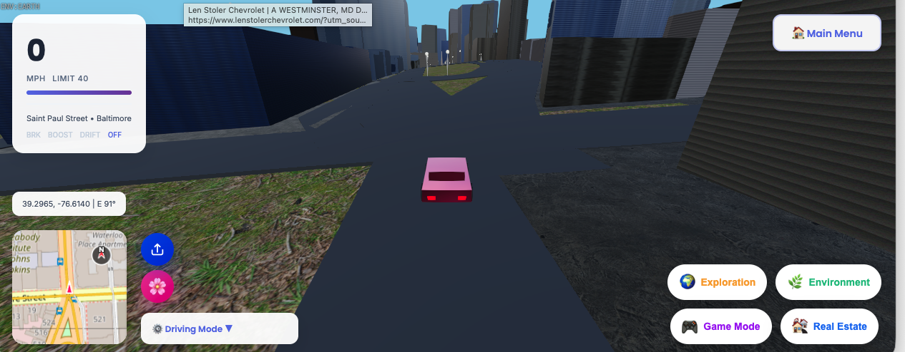
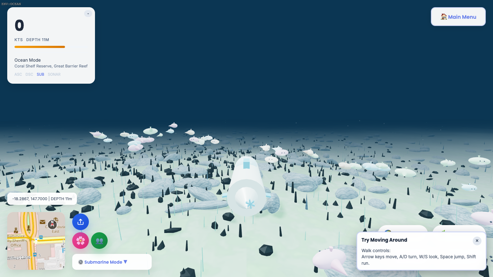
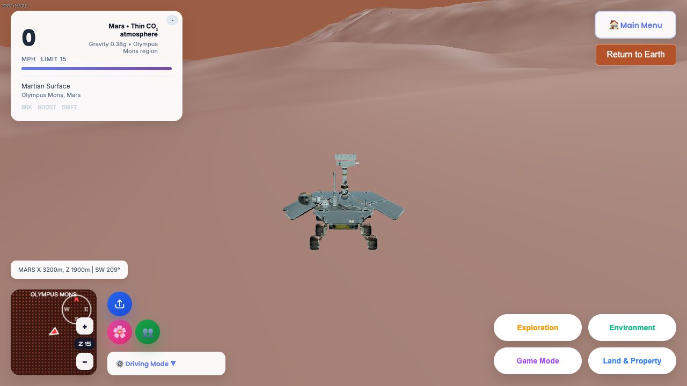
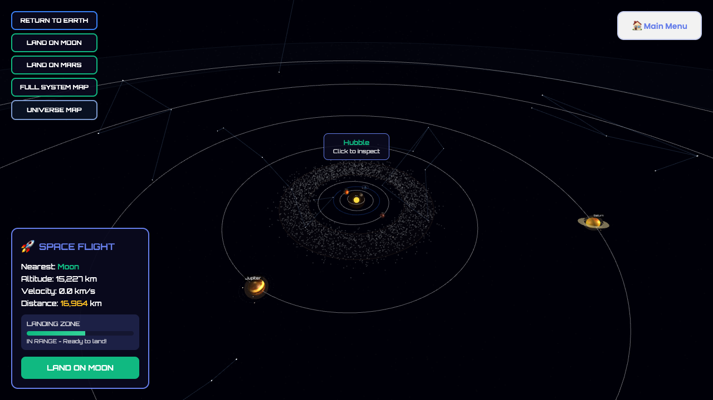

01
Earth
Roads, buildings, terrain, vegetation, water, landmarks, and location context derived from global geospatial sources.
Version 4.1.2
Explore real-world places in a browser, cross land and water, then continue to the Moon, Mars, and a navigable solar system.
One connected experience
World Explorer 3D combines map-informed environments with walking, driving, drone, plane, boat, rover, and space-flight modes. One globe-first workspace connects place selection, My Places, missions, multiplayer, Live Earth, and planetary travel.

01
Roads, buildings, terrain, vegetation, water, landmarks, and location context derived from global geospatial sources.

02
Boat traversal, waves, coastline transitions, underwater exploration, and a fishing game with catches and records.

03
Planet-specific terrain, gravity, vehicles, tracks, skies, and clean in-session travel back to Earth and space.

04
A flight experience with planets, moons, asteroid and Kuiper belts, spacecraft, stars, galaxies, and deep-space destinations.
Built from real context
Earth scenes use OpenStreetMap-derived geometry and other attributed public datasets. Live Earth separates observed aircraft, satellites, earthquakes, and water levels from modeled weather, marine guidance, predictions, and reference-only layers.
Open the live application